抗菌コート無料（作業後サービス）
カビ・ニオイ対策として、作業後に抗菌コートを無料で施工します（希望者のみ）。
※機種・状況により施工できない場合があります。その場合は事前にお伝えします。

まずはLINEで写真を送るだけ。17年経験の職人が料金目安をお伝えします。
沖縄市・宜野湾市・うるま市など、中部エリアのご家庭向けにエアコンクリーニングをご案内しています。南城市から丁寧にお伺いし、赤ちゃんや小さなお子さまがいるご家庭でも相談しやすいよう、作業内容や料金目安を事前にわかりやすくお伝えしています。
追加料金なし・事前に料金目安を案内 9,000円〜（税込）
料金目安や追加料金の有無は、LINEで先に確認できます。
LINEで無料相談する 空き状況を見て仮予約する※Airリザーブでの受付は仮予約です。内容確認後、LINEまたはお電話にて正式確定となります。
お問い合わせが集中しているため、現在はLINEでのお問い合わせを優先しております。確認後、順番にご返信いたします。
対象：沖縄市・宜野湾市・うるま市・北谷町・嘉手納町・読谷村・北中城村・中城村
相談だけでも大丈夫です。無理な営業は行いません。
沖縄県本島全域
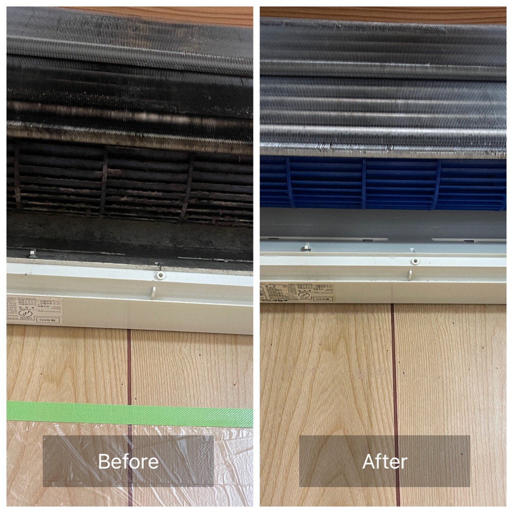
内部のカビ・ホコリをプロの技術で徹底洗浄。
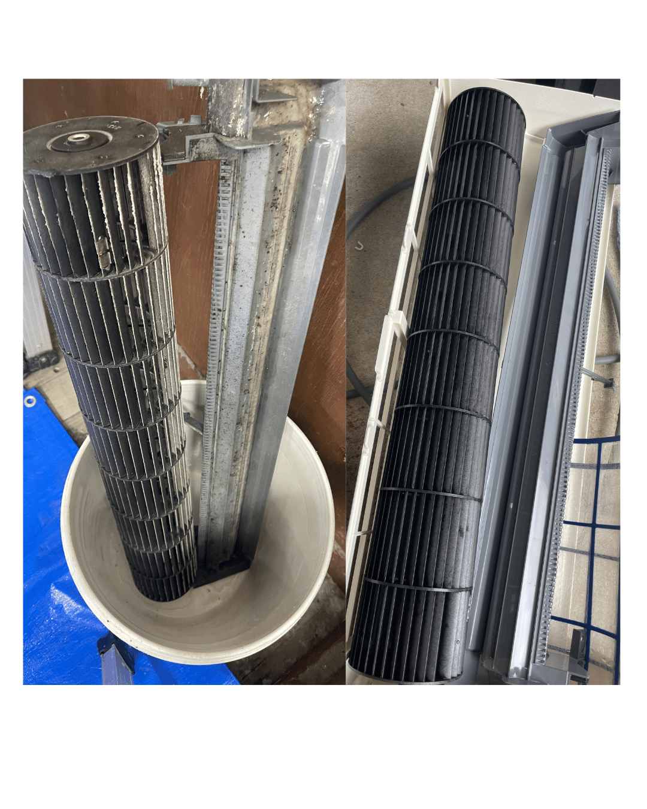
パーツを外して隅々まで。ニオイの元から除去します。
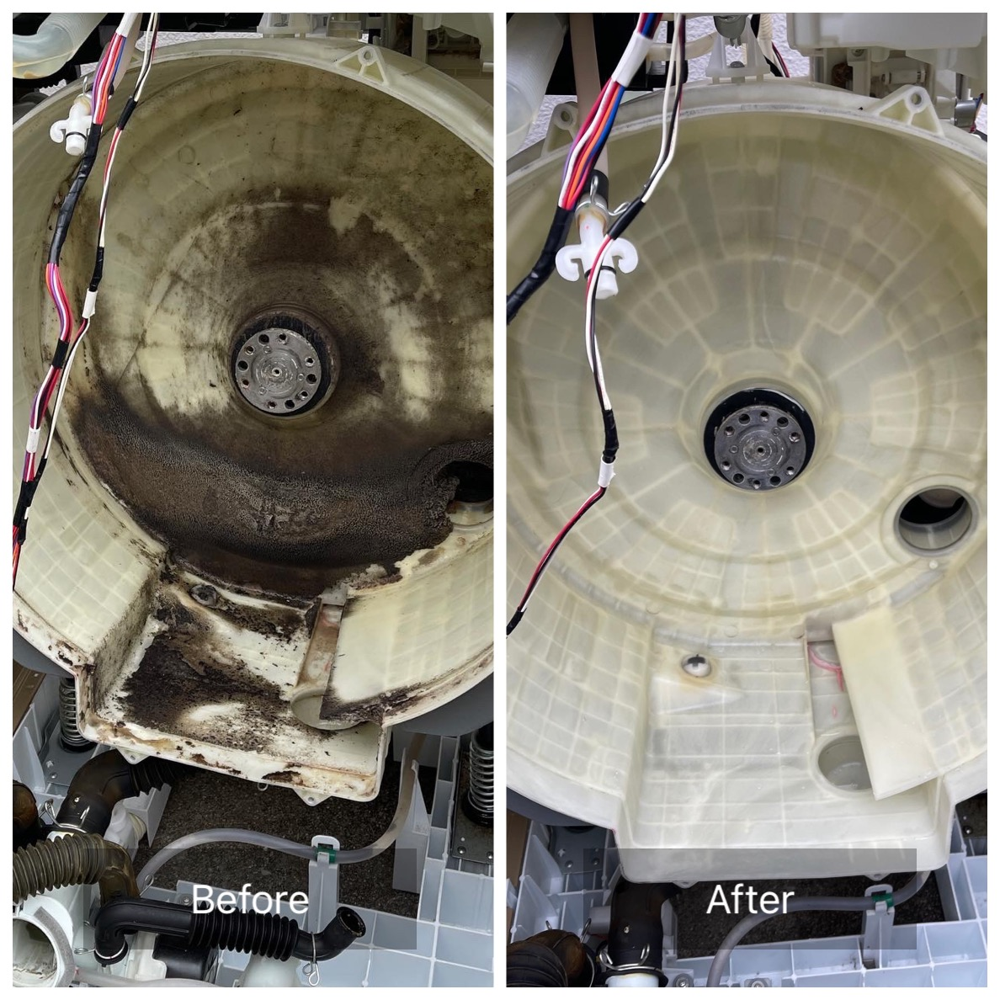
洗濯槽のカビ・汚れ・ニオイを分解洗浄で徹底的に除去します。
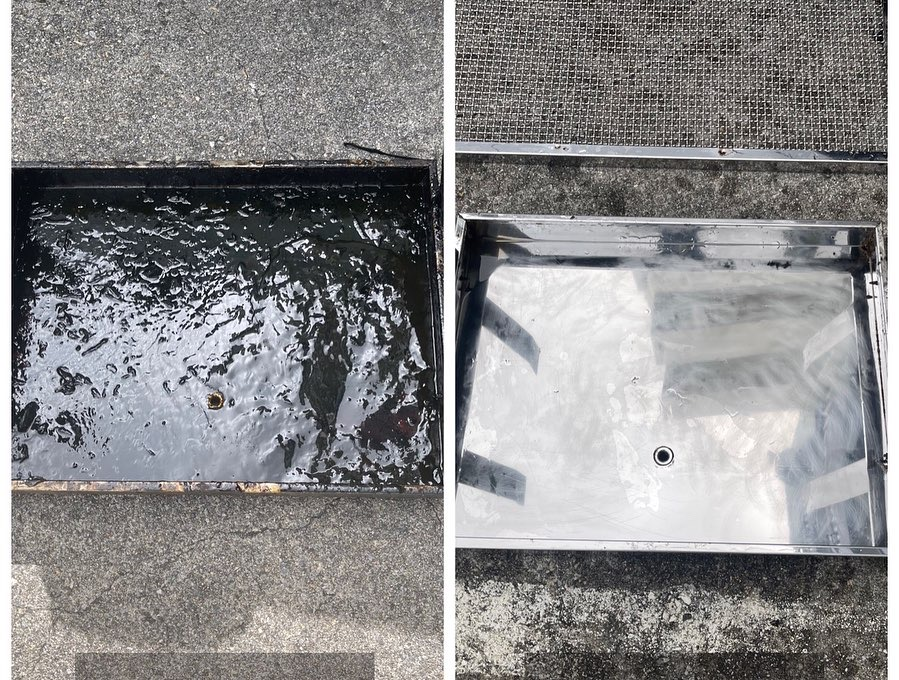
キッチン・浴室・トイレをまとめてピカピカに。
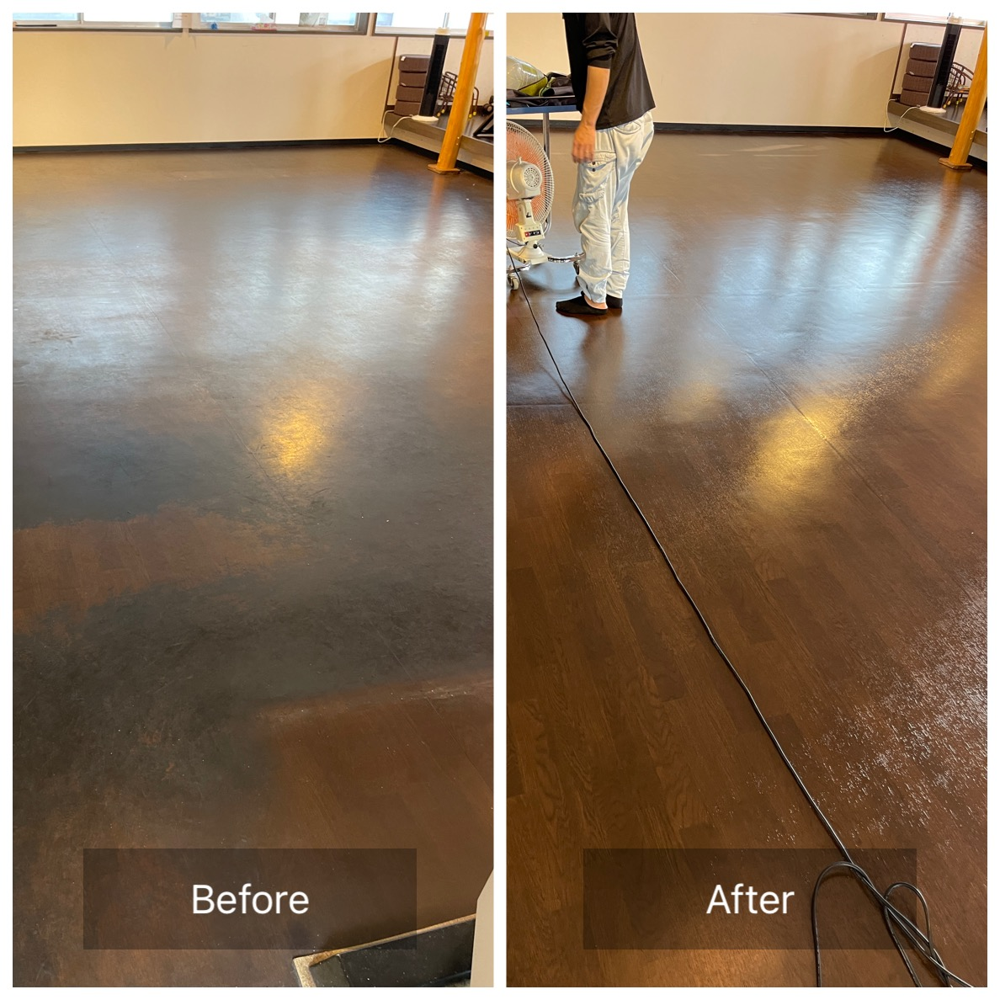
退去時・入居前のお部屋まるごとキレイにします。
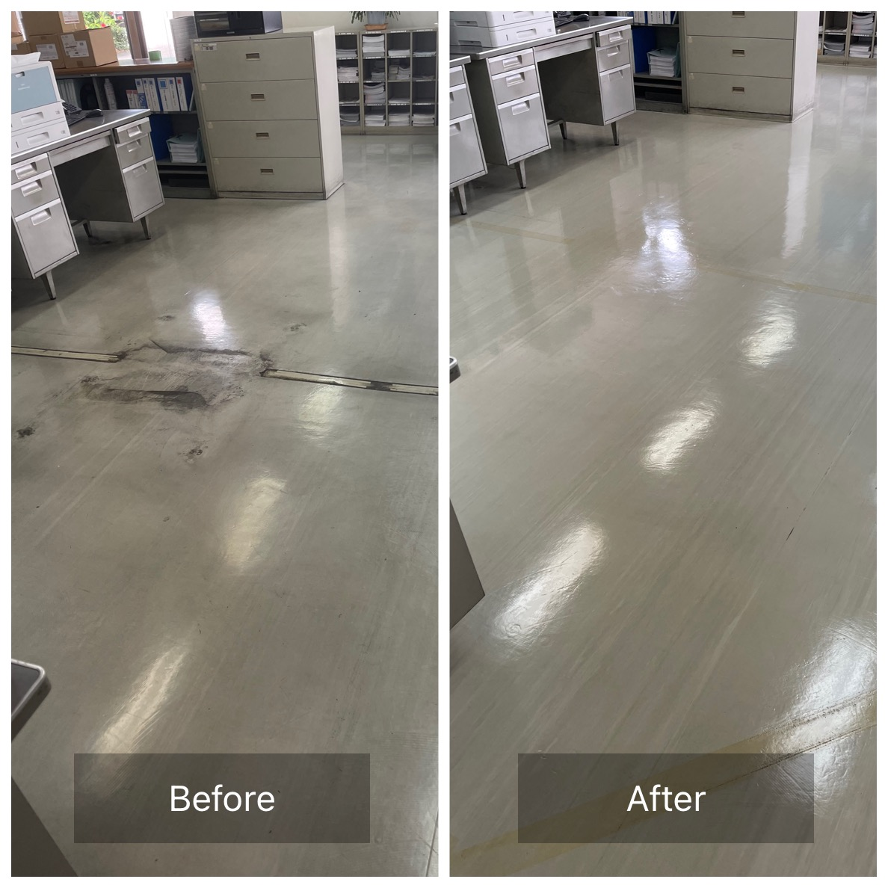
オフィス・飲食店の定期清掃もお任せください。
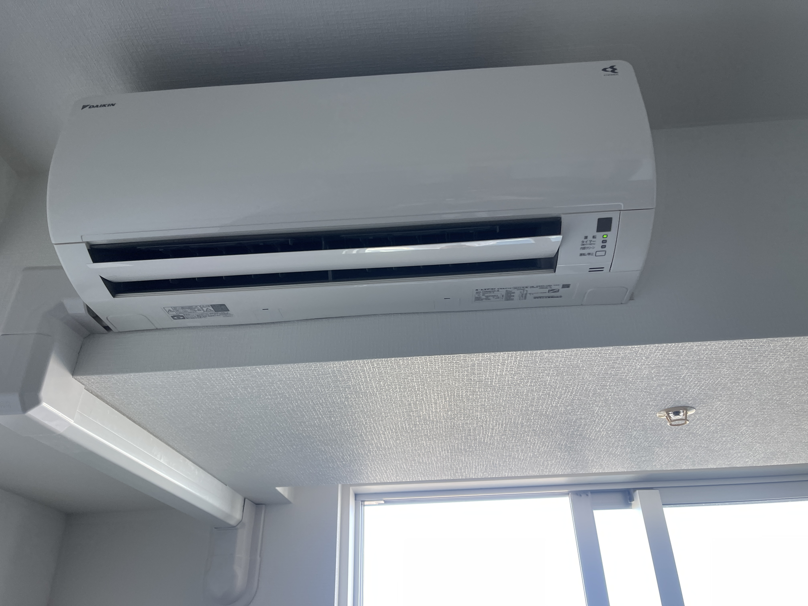
エアコンの取付・取外し・移設も対応可能です。クリーニングと合わせたご相談も承ります。
詳しい料金は下の料金表をご覧ください。
現在：26 世帯達成
目標：200 世帯
残り 174 世帯
200世帯達成後は洗濯機応援価格をスタート予定です。
沖縄中部の各市町村ごとに、地域特性に合わせたエアコンクリーニングをご案内しています。
沖縄市のエアコンクリーニング
市街地と住宅地が混在し、集合住宅でのエアコン使用頻度が高いエリア
宜野湾市のエアコンクリーニング
住宅密集地で室内干し・湿気がこもりやすいエリア
うるま市のエアコンクリーニング
中部最大のベッドタウン、長時間稼働で内部汚れが蓄積しやすい地域
北谷町のエアコンクリーニング
米軍基地近傍の潮風と砂塵の影響を受けやすいエリア
嘉手納町のエアコンクリーニング
道路沿いの住宅と新興住宅地が広がるエリア
読谷村のエアコンクリーニング
西海岸沿いで塩害・湿気の影響を受けやすい地域
北中城村のエアコンクリーニング
丘陵地で風通しは良いが梅雨時の湿気対策が重要なエリア
中城村のエアコンクリーニング
宜野湾湾に面し、海風による塩分付着に注意が必要な地域
中部エリア 9,000円（税込）〜
目安：1年間安心して使えるクリーニング
内部までしっかり洗浄する標準クリーニングです。
カビや汚れを除去し、1年間安心して使える状態に整えます。
税込 9,000円〜
エアコンを分解し、内部まで高圧洗浄でクリーニングします。
カビや汚れをしっかり除去し、1年間安心して使える状態に整えます。
通常分解は、予約時にご希望の施工内容をお知らせください。
ご相談だけでも大丈夫です。
返信は原則24時間以内に行います。
中部エリア向け料金（通常分解 9,000円〜 / 完全分解 15,000円）をご案内しています。
※ 中部エリア以外は距離・設置状況により料金が異なる場合があります。お気軽にご相談ください。
お掃除機能付きは内部構造が複雑で、分解・組み立てに時間がかかるため別料金です。
台数が多い機種なので、ここから直接予約できるようにしました。
※ 機種・設置状況により料金が前後する場合があります。写真を送っていただければ事前にご案内します。
作業前説明・追加費用の事前説明を徹底しています。
写真報告もご希望があれば対応いたしますのでご安心ください。
カビ・ニオイ対策として、作業後に抗菌コートを無料で施工します（希望者のみ）。
※機種・状況により施工できない場合があります。その場合は事前にお伝えします。
「これ故障？掃除で直る？」を1分で判定できるチェックリストをLINEでお渡しします。
チェックリストの全文はLINEで配布しています（LINEで全文を見る）。
📍 沖縄中部（沖縄市・宜野湾市・うるま市・北谷町・嘉手納町・読谷村・北中城村・中城村）のご家庭向けに、エアコンクリーニングをご案内しています。
📋 作業内容や料金について不安がある方は、よくある質問もご覧ください。
※ 以下の機種は内部構造が特殊なため、別料金となります。
機種が分からない場合は、
エアコンの写真を送っていただければ事前に確認いたします。
※ 汚れの程度・作業内容により金額が前後する場合があります。
※ 事前に写真を確認し、正確なお見積りをご案内します。
| メニュー | 料金（税込） |
|---|---|
| 縦型洗濯機クリーニング | 13,000円 |
| ドラム式洗濯機クリーニング | 28,000円 |
| 外壁・駐車場クリーニング | 10㎡ 5,000円〜 |
| 浴室クリーニング | 18,000円 |
| 換気扇（レンジフード） | 15,000円 |
| ハウスクリーニング（1R〜1K） | 20,000円〜 |
見た目はきれいでも、カバーを外すとこの状態です。
カビ・ホコリ・黒ずみが熱交換器全体に広がっています。

※ この状態で使い続けると、カビを含んだ風が室内に広がります。
クリーニング1台分の洗浄後に回収した汚水です。
見た目は清潔でも、内部にはこれだけの汚れが溜まっています。
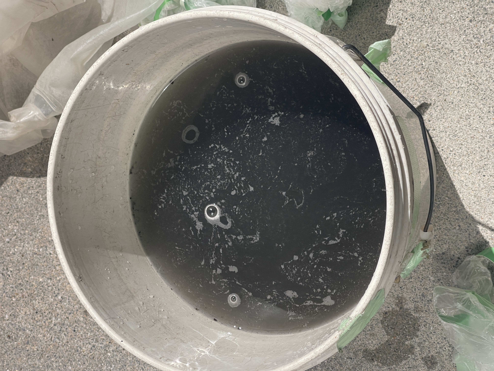
※ お子様のいるご家庭ほど、定期的なクリーニングをおすすめします。

照屋 昴（てるや すばる）
BCサービス 代表｜6児の父
清掃業界17年。沖縄中部を中心に、子育て家庭のエアコン・洗濯機・
ハウスクリーニングを担当しています。
自分自身も6人の子どもを育てているからこそ、
家の中の空気や衛生環境には特に気を配っています。
追加料金なし・事前説明あり。安心してご相談ください。
相談だけでも大丈夫です。無理な営業は行いません。
沖縄中部のご家庭で行った、通常分解のエアコンクリーニング事例をInstagramリールで紹介しています。分解洗浄の流れや、洗浄前後の変化を動画で確認できるため、「まずは通常分解で相談したい」「作業の雰囲気を見てから決めたい」という方にも参考になります。エアコンの風のにおいや内部の汚れが気になる方は、家庭向けクリーニングの参考としてご覧ください。
※Instagramの投稿が表示されない場合は、Instagramアプリまたはブラウザでご確認ください。
BCサービスは、沖縄市・宜野湾市・うるま市など中部エリアのご家庭向けにエアコンクリーニングをご案内しています。南城市から丁寧にお伺いし、対応エリアは、沖縄市 / うるま市 / 北谷町 / 嘉手納町 / 読谷村 / 宜野湾市 / 北中城村 / 中城村を中心としています。
通常分解クリーニングは、カバーやフィルター周辺を分解して洗浄する基本メニューです。エアコンの風のにおい、吹き出し口の黒い汚れ、使用前後のメンテナンスが気になるご家庭に向いています。
通常分解では届きにくい内部汚れが気になる場合は、完全分解クリーニングもご相談いただけます。完全分解では、機種や設置状況に応じて部品をさらに取り外し、送風ファンやドレンパン周辺など、汚れが残りやすい部分まで確認しながら洗浄します。詳しくは完全分解クリーニングの施工事例ページもご覧ください。
料金目安は、通常分解クリーニングが9,000円〜、完全分解クリーニングが15,000円〜です。お掃除機能付きエアコンや設置状況、汚れ具合によって料金が変わる場合があるため、LINEで写真や型番を送っていただけると、事前に目安をお伝えしやすくなります。
赤ちゃんや小さなお子さまがいるご家庭でも相談しやすいよう、作業内容・料金目安・所要時間をできるだけ事前にわかりやすくお伝えしています。実際の作業の雰囲気は、ページ内のInstagram施工事例や、完全分解クリーニングの施工事例ページも参考にしてください。
作業内容や料金について不安がある方は、よくある質問もご覧ください。
完全分解は枠が限られています。『やっておけば良かった』となる前に、まずは日程だけ確保しておくのがおすすめです。
作業可否や最適プランは、
LINEで写真を送っていただければ事前に確認できます。
🎁 LINE友だち限定特典あり（エアコンご依頼の方）
空き状況を見て仮予約するAirリザーブから事前決済もご利用いただけます（オンライン決済対応）。
※Airリザーブでの受付は仮予約です。内容確認後、LINEまたはお電話にて正式確定となります。機種・台数・設置状況により、日程や料金が変わる場合があります。
写真で相談したい方、完全分解できるか確認したい方は、これまで通りLINEに写真を送ってください。
ご要望が契約範囲を超える場合は、必ず事前にご説明し、ご納得いただいてから作業を行います。
無理な施工や曖昧な追加料金はいたしません。
子育て家庭応援クリーニング 代表
照屋 昴
（6児の父）
第二種電気工事士
清掃業界17年
電気工事業 登録準備中
（認定電気工事士 講習受講予定：2月26日）
子育て家庭にとって、安心で勝つ会社であり続けます。
とても丁寧に作業して下さり、クリーニング後の汚れも見せてもらいました。エアコンの効きが良くなりとても快適になったので、またお願いしようと思います。
エアコン2台分掃除してもらいました。水が我が家のエアコンの汚れで真っ黒でびっくりしました！！凄く綺麗にしてくれて助かりました✨ 対応も良かったので、リピートして次の年もお願いしました＾＿＾
柔軟に対応いただき、とても綺麗に仕上げていただけました。とても信頼出来る方でしたので、また何かあれば依頼します。悩んでる皆様にもオススメしたいです。
3台、完全分解を依頼しました。
他の業者の方が届かない場所まで綺麗にして頂き、ありがとうございました。
初めての方からよくいただく質問をまとめました。沖縄中部のエアコンクリーニング・完全分解クリーニングをご検討の子育て家庭の方に、家族が吸う空気にも配慮した内容をわかりやすくまとめています。
ご家庭の使用状況によりますが、一般的には1〜2年に1回がおすすめです。小さなお子様やペットがいるご家庭、使用頻度が高いご家庭は早めのクリーニングをご検討ください。
対応可能です。メーカーや機種によって作業内容や料金が異なるため、写真を送っていただければ事前にご案内いたします。
通常分解では外せない部品まで取り外し、内部の汚れをしっかり洗浄するクリーニング方法です。通常分解では落としきれない汚れが気になる方におすすめです。詳しくは完全分解クリーニングの説明ページをご覧ください。
機種や汚れ具合によりますが、ノーマルエアコンは約1〜2時間、お掃除機能付きは約2〜3時間が目安です。
作業開始時と完了確認時だけ立ち会っていただければ大丈夫です。途中は別室でお過ごしいただいても問題ありません。
はい。ご家庭への配慮を大切にしながら作業を行っています。気になることがあれば事前にご相談ください。
機種・設置状況・汚れ具合によって変わる場合がありますが、作業前にご説明し、ご納得いただいてから作業を行います。
沖縄は湿気が多く、冷房を使う期間も長いため、梅雨前から夏前、または使用頻度が落ち着く秋ごろのご相談が多いです。においや黒い汚れが気になる場合は、時期に関係なく早めの確認がおすすめです。
主に沖縄市、うるま市、北谷町、嘉手納町、読谷村、宜野湾市、北中城村、中城村で対応しています。その他地域もお気軽にご相談ください。
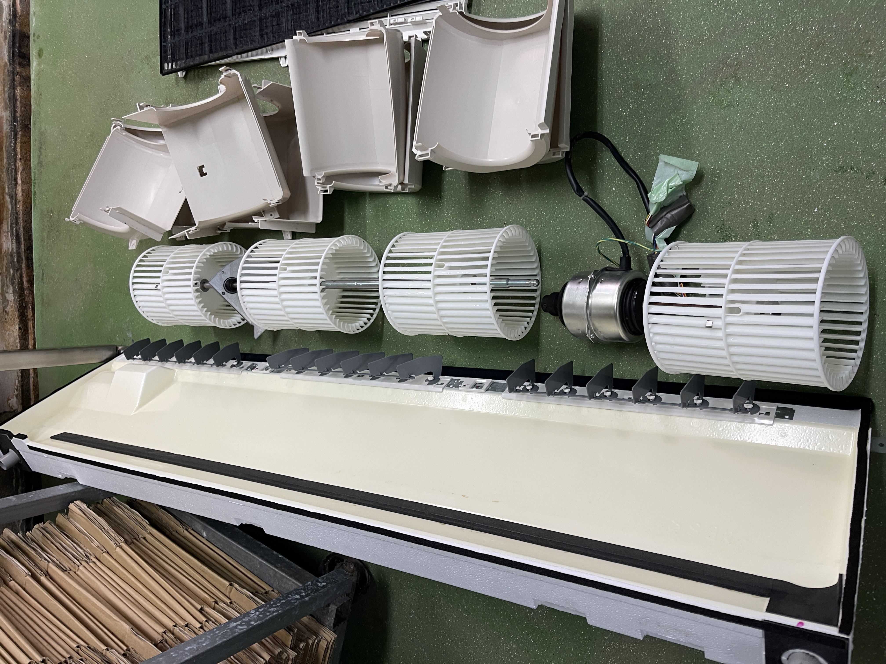
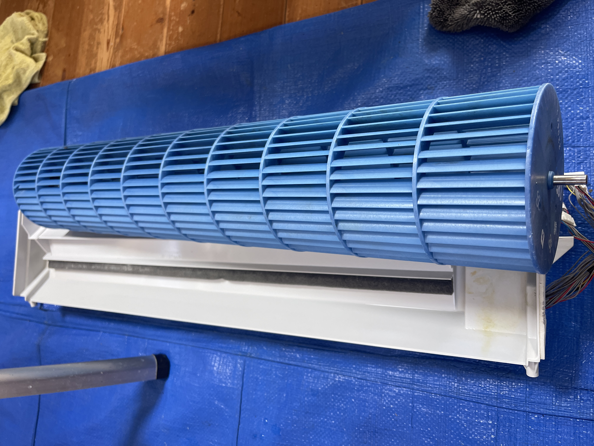
一台一台を分解し、見えない内部まで丁寧に。
エアコンの構造を理解しているからこそできる、徹底したクリーニングを行っています。
洗浄前の内部の汚れから、分解・洗浄、汚水の状態、施工後の仕上がりまで、現場の流れがわかる写真を掲載しています。
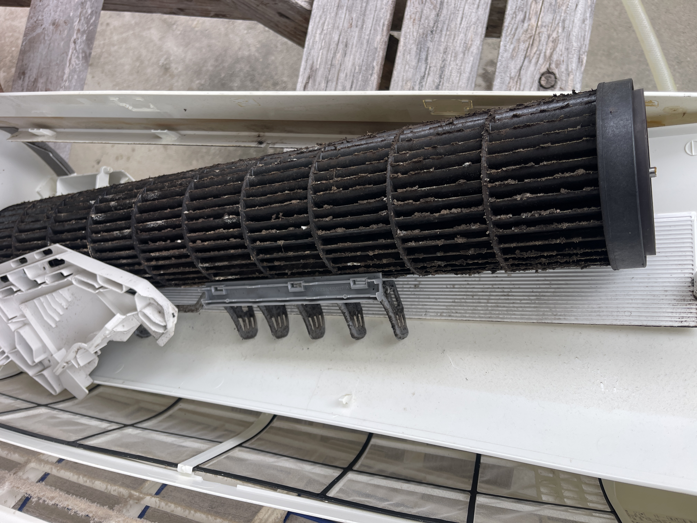

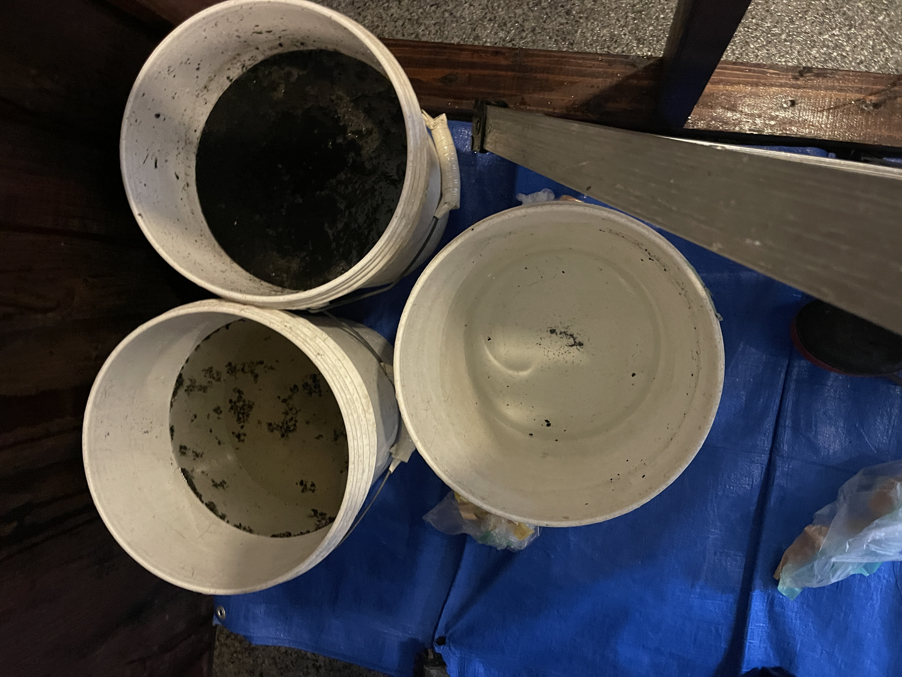
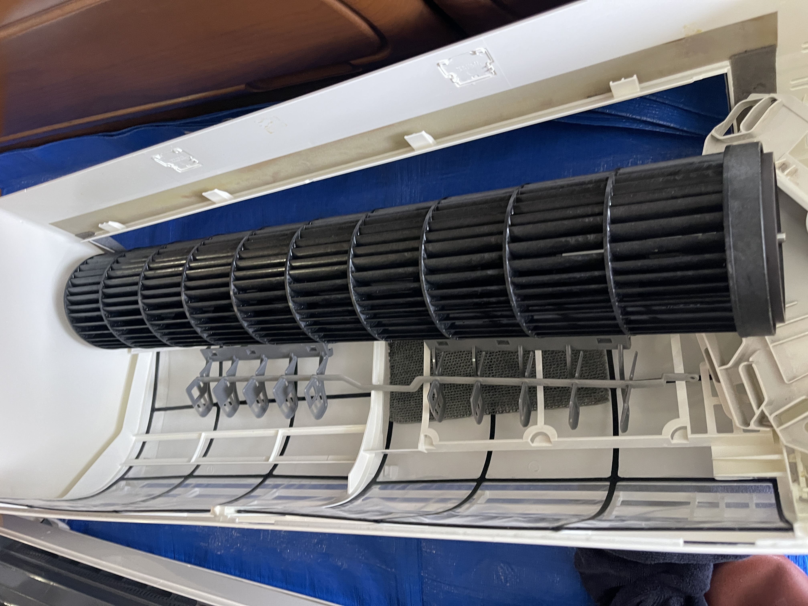
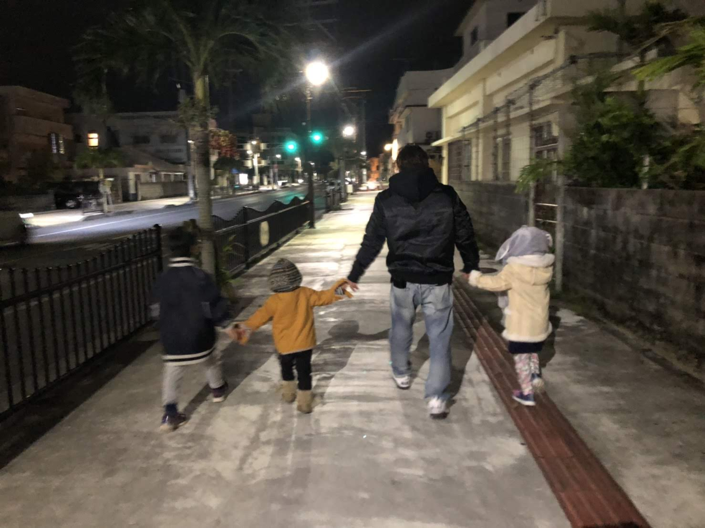
エアコンの写真を送っていただくだけで、
最適なプランと概算料金をご案内します。
無理な営業や追加料金のご案内はありません。
ご相談・お見積りはお気軽にどうぞ。
| 屋号 | BCサービス |
|---|---|
| 対応エリア | 沖縄本島 |
| 住所 | 〒901-1204 沖縄県南城市大里稲嶺2127-34 |
| メール | bc.teruya@gmail.com |
| LINE | LINEで相談する |
| 資格 | 第二種電気工事士（免状取得済） |
🎁 LINE友だち限定特典あり（エアコンご依頼の方）
空き状況を見て仮予約する※仮予約受付です。内容確認後に正式確定となります。写真確認が必要な場合はLINEに写真を送ってください。